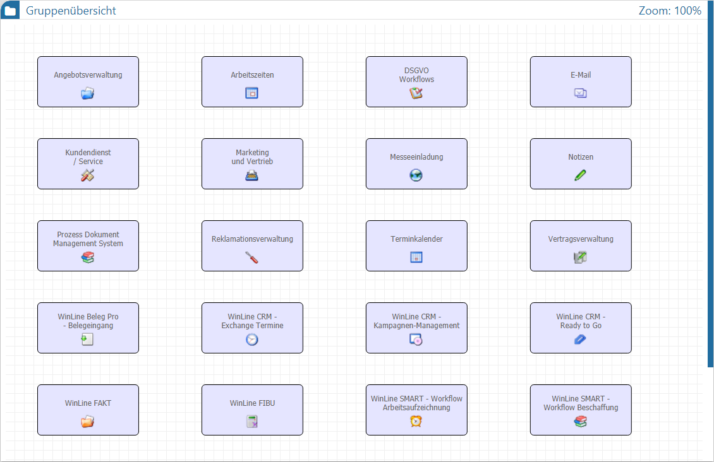
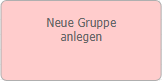

In der Gruppenübersicht werden die einzelnen Workflow-Gruppen angezeigt. Die Navigation, d.h. der Wechsel in einer Gruppe, erfolgt durch Anwahl der Gruppe per Maus.
Hinweis
Mit Hilfe des Buttons "Übersicht" kann jederzeit wieder in die Gruppenübersicht zurückgewechselt werden.

Innerhalb der Übersicht werden die einzelnen Gruppen dargestellt. Zusätzlich steht im Bearbeitungsmodus ein Objekt zur Anlage neuer Gruppen zur Verfügung.
ü - Workflow-Gruppe
Die Gruppen dienen zur
Gruppierung von einzelnen Workflows (Startschritten) und Aktionsschritten.
Zusätzlich können Gruppen als Auswertungskriterium im WinLine LIST verwendet
werden.
ü

- Neue Gruppe anlegenHinweis
Gibt es innerhalb einer Gruppe eine nicht gespeicherte Änderung, so wird die Gruppe mit einem * gekennzeichnet.